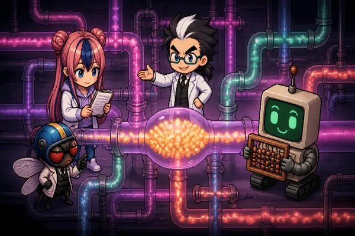

경맥 연구실 · 자금순환으로 읽는 거시경제
경맥 연구실 · 자금순환으로 읽는 거시경제
경맥 연구실 · 자금순환으로 읽는 거시경제
경맥 연구실 · 자금순환으로 읽는 거시경제
돈은 어디로 흐르고, 어디에 고이고, 어디서 막히는가? 경제순환모형·IS-LM·AD-AS를 회계의 세 장부(손익계산서·재무상태표·현금흐름표) 비유로 자금순환표와 잇고, 한국은행 통계로 2025~2026년 한국 경제의 돈의 흐름을 출처와 함께 읽습니다. 슬라이더와 시뮬레이션을 직접 움직여 보는 인터랙티브 해설입니다.

돈은 어디로 흐르고, 어디에 고이는가?
경제순환모형 → IS-LM → AD-AS → 부문수지 항등식 → 잔액표의 평가 변동까지 사다리로 오른 뒤, 반도체 이익 집중·주식과 실물의 괴리·지역 집값 진단 카드와 환류 시나리오를 돌려 봅니다.
해설 열기 →가계가 은행에 맡긴 돈은 결국 누구에게 갔을까?
보유자 × 발행자 행렬과 중개 투시 실험으로 원리를 익히고, 2024년 말 상호연계비율과 2026년 분기 자금순환(예금 → 주식·펀드)으로 실제 돈의 지도를 근사합니다.
해설 열기 →금융기관끼리 촘촘하게 엮일수록 더 안전할까, 더 위험할까?
환승 모형으로 금융권 안에서 도는 돈을 보고, 고리형·완전 연결·두 무리 금융망의 전염 실험을 돌린 뒤, 2024년 말 금융기관 간 연계와 2026년 금융안정 지표를 점검합니다.
해설 열기 →| 자료 | 쓰인 곳 |
|---|---|
| 한국은행, 「상세자금순환표 신규 공표」 보도참고자료 (2026-01-08) 원문 | 02·03 |
| 한국은행 분기 자금순환(잠정) 2026년 1·2분기 — 보도로 확인 | 01·02 |
| 한국은행, 「최근 금융부문의 상호연계성 추이 및 리스크 점검」 (금융안정보고서 2021-12) 원문 | 03 |
| 한국은행, 2026년 상반기 금융안정보고서 (2026-06-24) — 보도로 확인 | 03 |
| 한동훈 (2012), 주동헌 (2019) — 자금순환표를 이용한 실물경기·금융가속기 연구 | 01 |
| Godley & Lavoie (2007) Monetary Economics; Allen & Gale (2000); Eisenberg & Noe (2001); Acemoglu, Ozdaglar & Tahbaz-Salehi (2015) | 01~03 |
편마다 바닥글에 숫자별 출처 표와 확인일을 실었습니다. 이 시리즈는 교육용이며 투자 자문이 아닙니다.